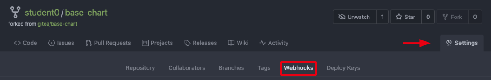

First Execution Visit User Configuration section to configure your username if you haven’t set it up yet! Configure Webhook We have created a Helm Chart named base-chart that will help Operation Teams with cluster management and also will help Application Teams with application deployments. In order to make upgrades or fix issues in our base-chart we are going to create a pipeline that manages the Helm Chart lifecycle. The first step is creating a webhook in our AAP Workflow (pipeline) and configure it in Gitea base-chart repository so we can trigger it when new features or fixes are commited in our repository. Create Webhook in AAP Login into Ansible Automation Platform and go to: Resources > Templates > [WF] Base Chart Pipeline and click edit. Enable the option Enable Webhook. Under Webhook details select GitHub as Webhook Service. Click Save to generate the Webhook Key. Copy the Webhook Key and the Webhook URL. Configure Webhook in Gitea Login into Gitea and open base-chart repository. Go to Settings (top right corner) > Webhook > Add Webhook > Gitea.  Configure the following fields: Target URL: Copy the Webhook URL from AAP. Secret: Copy the Webhook Key from AAP. Keep the rest of settings by default. Click Add Webhook. Configure Nexus Package Playbook Nexus is going to be the repository where we’re going to upload our packaged base-chart. In order to be able to upload it automatically as part of our pipeline, we need to modify the playbook where the chart is packaged and uploaded to point to your student repository in Nexus. Login into Gitea and open helm-ansible-pipeline repository. Open the playbook 05-helm-package-nexus.yml. Replace all content with this: --- - name: Helm Package Nexus hosts: all gather_facts: false tasks: - name: Debug ansible.builtin.debug: msg: Helm Package - name: Clone Base Chart remote repository ansible.builtin.git: repo: http://gitea.app-lifecycle-lab.svc:3000/%USER%/base-chart.git dest: /tmp/base-chart version: master - name: Package Helm test scenario ansible.builtin.shell: helm package chart args: chdir: /tmp/base-chart - name: Load Chart information ansible.builtin.include_vars: file: /tmp/base-chart/chart/Chart.yaml - name: Nexus Credentials ansible.builtin.set_fact: nexus_credentials: "%USER%:%USER%" - name: Upload Helm Base Chart package to Nexus ansible.builtin.shell: | curl -X 'POST' \ 'http://{{ nexus_credentials }}@nexus.app-lifecycle-lab.svc:8081/service/rest/v1/components?repository=%USER%' \ -H 'accept: application/json' \ -H 'Content-Type: multipart/form-data' \ -F 'helm.asset=@base-chart-{{ version }}.tgz;type=application/gzip' args: chdir: /tmp/base-chart # TODO: "Populate New Base Chart version {{ version }}" Click Commit Changes. Update Chart Repository Now it is time to trigger our AAP Workflow. To do so we’re going to make a change in our base-chart repository and that change will automatically trigger the pipeline. Login into Gitea and open base-chart repository. Open the file chart/Chart.yaml. Modify version to 1.0.0. Click Commit Changes. Validate Execution Pipeline should be now running in AAP and the new version of base-chart should be in your student repository in Nexus, let’s take a look at it. Login into Ansible Automation Platform and go to: Views > Jobs > [WF] Base Chart Pipeline (last execution): Access the Workflow to review the execution, all JobTemplates should have a green check: Now let’s login into Nexus > Browse > %USER% to validate that the new version of your base-chart has been uploaded. Update Application Currently your demo-app deployment in ArgoCD is pointing to an initial version named base-chart-0.0.1. In order to update it and use the new version that we’ve just created, we need to update the deployment files in ArgoCD. Login into Gitea and open demo-app repository. Open the file deploy/Chart.yaml and update: Repository: change /helm with your student id. Version: update to 1.0.0: apiVersion: v2 name: demo-app description: Demo App type: application version: 1.0 appVersion: "1.0.0" dependencies: - name: base-chart repository: http://nexus.app-lifecycle-lab.svc:8081/repository/%USER%/ version: 1.0.0 Commit your changes. Login into ArgoCD and open your demo-app application. ArgoCD automatically syncs each 3 minutes but we can manually force ArgoCD synchronization by pressing the REFRESH button (use the default synchronization values). Now you should see your changes applied in the section LAST SYNC RESULT. Login into OpenShift and go to Topology and select your %USER%-demo-app namespace. Open your deployment clicking on the NGINX icon: Click on demo-app-xxx pod link to review pod details and validate the pod have a label helm.sh/chart:base-chart-1.0.0: Review the other labels added by the base-chart to help on cluster housekeeping tasks. Use the URL button in OpenShift topology view to open your application, the chart version should be base-chart-1.0.0: your web browser could be caching previous version. Use Ctrl + F5 or Cmd-Shift-R on MacOS to refresh your cache. 1. Overview 3. Testing Environment